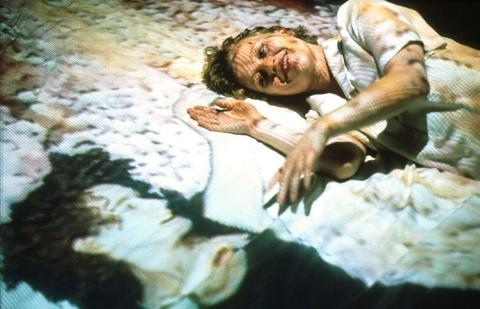

DPaul Sermon - 1992
Material: beds, projectors, cameras, loud speakers, and TV screens.
Sermon aims at expanding the senses of the user, while it is obvious that the other cannot really be touched but that only swift, decisive, possibly tenderly reactive movements can experience the suggestion of touch—a moment of contemplation, as many users observed.
Telematic Dreaming was a telecommunication project by Paul Sermon in which the audience had to deal with two important aspects of telecommunication: physical presence and telepresence. The project could have taken place between two beds and bedrooms that could have been located hundreds of kilometres away from each other. Here, the two beds were just a few houses away from each other. The bed at V2_ was situated in the in the exhibition space of the Fifth Manifestation for the Unstable Media. Paul Sermon was in the other space, a block away from the V2_ building, were the other bed was located. With video cameras, a two-way interactive video and audio line was open.
The clear projection of another person, who can react almost in real time to the other's movements on the bed, is so suggestive that to touch the body's image, projected onto the sheet, becomes an intimate act. The traditional rhetorical technique of hyperrealism is capable of addressing other senses through the faculty of vision. The images of another person in close proximity have such a strong effect that the visual impression stimulates a suggestion of tactility.
When you miss your loved ones, meet them on the beds.
At Optimal Living, you can connect with your loved ones on your bed with the projectors pre-installed in your own room! You don't have to go out ever again as you will meet people and imagine the touch and intimacy visually.
Telematic Dreaming is a key part of Optimal Living - telecommunication. Rapid telecommunication enables us to work from home and the need to walk out for work disappears gradually from people's lives. We can basically order food, have our meetings, socialize and make money virtually, and this pandemic is the ultimate proof of how we are able to adapt to this highly telamatic life. One day, optimal living will become the reality.
It's about being in control of our life, and being confined in our own little room.
Paul Sermon is Professor of Visual Communication at the University of Brighton, his practice-based research in the field of contemporary media art centres on the creative use of telecommunication technologies. Since the early nineteen-nineties Paul Sermon’s practice-based research in the field of contemporary media art has centred on the creative use of telecommunication technologies. Through his unique use of videoconference techniques in artistic telepresence applications he has developed a series of celebrated interactive telematic art installations that have received international acclaim.